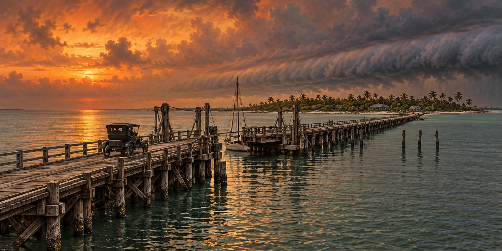

Lost Bridges of Old Florida
The “Rickety Bridge,” and What Florida Learned From Watching It Wash Away

Locals called it the “Rickety Bridge,” and the nickname was not affectionate exaggeration. Completed in 1917, the wooden span from Clearwater to Clearwater Beach had warped so badly in the Florida sun that its boards popped their own nails, and cars crossed it at a slow, noisy “clippity-clop.” It was the kind of improvised, underbuilt structure early twentieth-century Florida threw up to meet a sudden need, never engineered for the storm it eventually met.
The October 1921 Hurricane
The storm made landfall at about Category 3 strength with a surge as high as eleven feet, the highest then recorded in the area. It killed at least eight people and caused more than ten million dollars in damage. Among the structures it destroyed were two wooden spans on opposite sides of Pinellas County: the bridge to Clearwater Beach and one serving Pass-a-Grille.
A Channel the Storm Cut Itself
The 1921 storm also reshaped the land. It cut a new channel dividing what had been one landmass into Caladesi Island and Honeymoon Island, a permanent feature locals named Hurricane Pass. It damaged the St. Petersburg Municipal Pier, smashed boats against the downtown yacht basin, and unroofed hundreds of buildings. Six days after the storm, on October 31, rebuilding work on the pier began, and the city soon authorized a far larger concrete pier, the “Million Dollar Pier.”
The wooden bridge to Clearwater Beach was not rebuilt as wood. A permanent causeway replaced it in the following years, an early and largely forgotten example of rebuilding better rather than simply replacing, the pattern Florida would repeat on a far larger scale after Hurricane Andrew in 1992.
A Bridge Built Different Because the Water Demanded It
Not every lost bridge was local. The Bahia Honda bridge on Flagler’s railroad was an exception to the line’s concrete arches: the channel beneath it ran so deep that engineers used steel trusses. After the 1935 hurricane destroyed much of the railroad, the state, converting the line for highway use, placed a roadway above the truss because the original rail-level opening was too narrow for highway traffic.
The Same Lesson, Eight Decades Later
A damaged bridge presents two urgent needs: restoring access and reducing the chance of another failure. Engineers must consider the water, waves, wind and debris that a replacement may face. Reusing an old corridor can speed recovery, but the new structure must serve traffic and hazards different from those its predecessor was built for.
Quick Facts
| The Rickety Bridge | Wooden Clearwater Beach crossing completed in 1917 |
|---|---|
| 1921 hurricane | October 25; Category 3 at landfall |
| 1921 surge | Up to about 11 feet |
| Hurricane Pass | Channel cut between Caladesi and Honeymoon islands |
| Bahia Honda | Roadway placed above the old railway truss |
Did You Know?
A single hurricane in 1921 split one landmass into two islands.
The Rickety Bridge’s nails popped out of its boards in the Florida sun.
St. Petersburg began rebuilding its storm-damaged pier six days after the hurricane.
Vocabulary
Causeway: a raised roadway built across water or marshy ground.
Truss: a rigid frame of connected triangles used to support a bridge.
Storm surge: the abnormal rise of sea level pushed ashore by a storm’s winds.
Discussion Questions
1. Why was the Clearwater Beach bridge replaced with something different rather than rebuilt as it was?
2. When is it better to rebuild a bridge faster, and when better?
Related Articles
FLH-0030 — The Storm That Destroyed Flagler’s Railroad
FLH-0023 — Storm Surge: Florida’s Greatest Threat
FLH-0007 — Hurricane Andrew (1992)
FLH-0034 — Rebuilding the Overseas Highway
Sources
Historical Marker Database. “The Seminole Bridge Historical Marker.” hmdb.org
Northeast Journal. “Learning from History: A Look Back at the Hurricane of 1921.” northeastjournal.org
Bouth, Michael. “The 1921 Tampa Bay Hurricane.” Tampa Historical. tampahistorical.org
National Weather Service, Tampa Bay. “Tampa Bay / Tarpon Springs Hurricane of 1921.” weather.gov/tbw
Florida Memory. “Remains of Seminole Bridge Destroyed by Hurricane.” State Library and Archives of Florida. floridamemory.com
Governing. “Post-Hurricane, Should Florida Rebuild Bridges Faster or Better?” governing.com
NWS — Tampa Bay hurricane of 1921